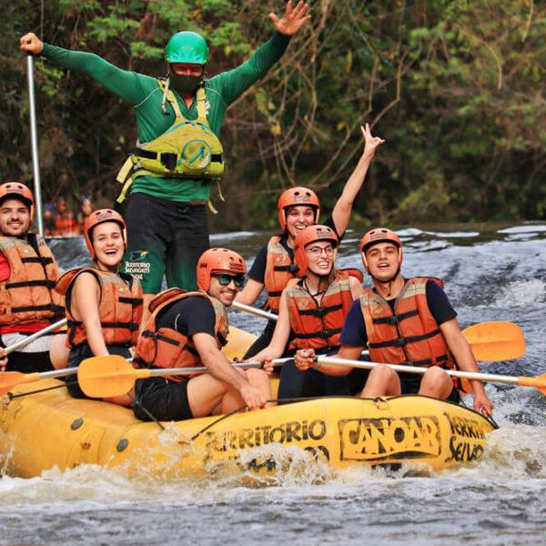
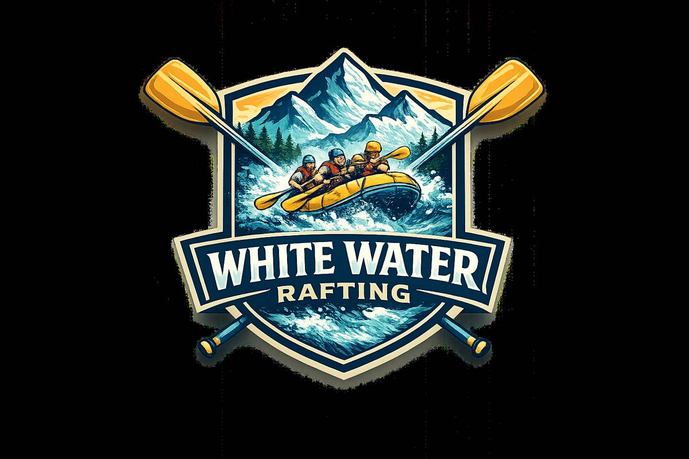
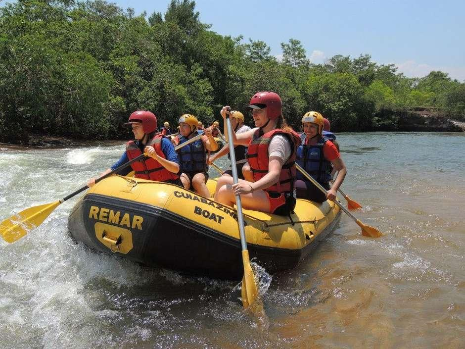
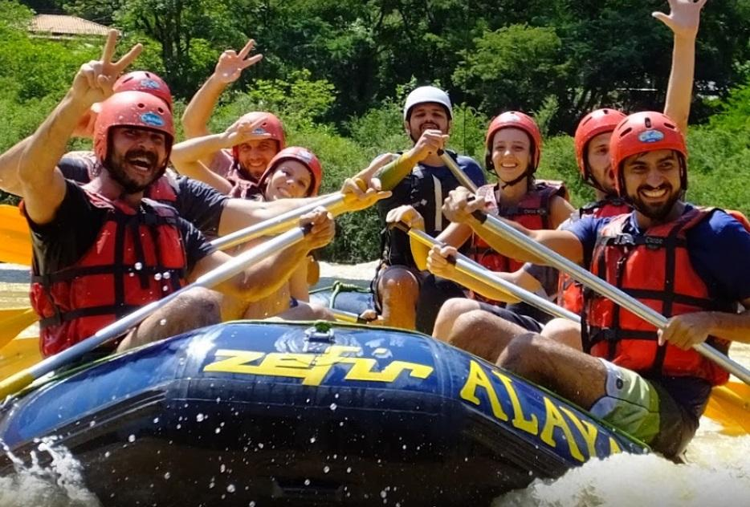

Passeio Iniciante
Perfeito para famílias e iniciantes. Uma experiência divertida e segura para conhecer o rafting.

Entre em contato hoje mesmo para reservar sua aventura.
Fale Conosco
Perfeito para famílias e iniciantes. Uma experiência divertida e segura para conhecer o rafting.

Corredeiras mais emocionantes para quem deseja aumentar o nível de aventura.

Aventura intensa para praticantes experientes que buscam fortes emoções.
| Passeio | Duração | Nível | Preço |
|---|---|---|---|
| Iniciante | 2 horas | Fácil | R$ 150 |
| Intermediário | 4 horas | Médio | R$ 250 |
| Radical | 6 horas | Difícil | R$ 400 |